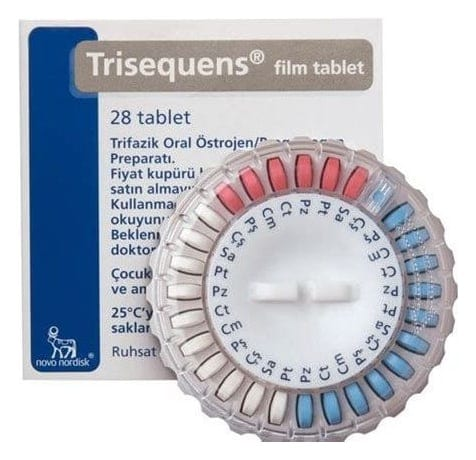

Trisequens Film Kaplı Tablet, 28 Adet

Ne için kullanılır
KT · Bölüm 1TRISEQUENS®, kesintisiz olarak her gün alınan sürekli kombine Hormon Replasman Tedavisi (HRT)’dir. TRISEQUENS®son doğal periyotlarından sonra en az 6 aydır adet görmeyen postmenopozal kadınlar için uygundur.
TRISEQUENS®, bir östrojen (östradiol) ve bir progestojen (noretisteron asetat) olmak üzere iki hormon içerir. TRISEQUENS®içindeki östradiol, kadınların yumurtalıklarında üretilen
östradiol ile aynıdır ve doğal östrojen olarak sınıflandırılır. Noretisteron asetat, bir diğer önemli dişi cinsiyet hormonu olan progesteron ile benzer biçimde etki gösteren sentetik bir progestojendir.
TRISEQUENS®, menopozun neden olduğu belirtilerin giderilmesinde kullanılır. Menopoz süresince, kadın vücudunun ürettiği östrojen miktarı azalır. Bu durum, yüzde, boyunda ve göğüste ısı artışı (sıcak basması) gibi belirtilere neden olabilir. TRISEQUENS®, bu menopoz sonrası belirtileri hafifletir. TRISEQUENS®size ancak belirtileriniz günlük hayatınızı ciddi şekilde aksatıyorsa reçete edilecektir.
Osteoporozun Önlenmesi Menopozdan sonra bazı kadınlarda kemik kırılganlığı (osteoporoz) gelişebilir. Doktorunuzla tüm seçenekleri görüşmelisiniz. Osteoporoz nedeniyle kırık riskiniz yüksekse ve diğer ilaçlar size uygun değilse, menopoz sonrası osteoporozu önlemek için Activelle®kullanabilirsiniz.65 yaş üzerindeki kadınların tedavisinde deneyimler sınırlıdır.
TRISEQUENS®takvimli ve çevrimli kutu içerisinde 28 film kaplı tablet şeklinde bulunur. Film kaplı tabletler 6 mm çapında ve yuvarlaktır. Mavi tabletlerin üzerine NOVO280 kazınmıştır. Beyaz tabletlerin üzerine NOVO281 kazınmıştır. Kırmızı tabletlerin üzerine NOVO282 kazınmıştır. 28 tabletlik her bir kutuda 12 mavi tablet, 10 beyaz tablet ve 6 kırmızı tablet bulunur.